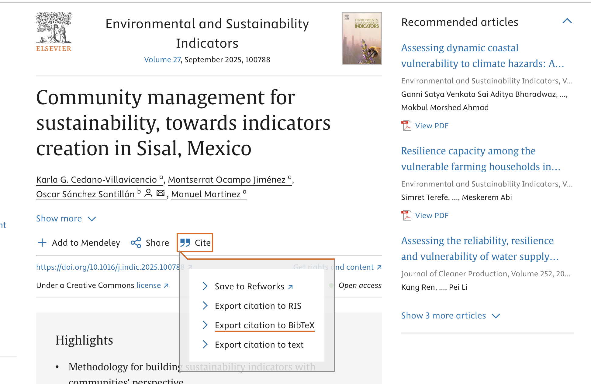
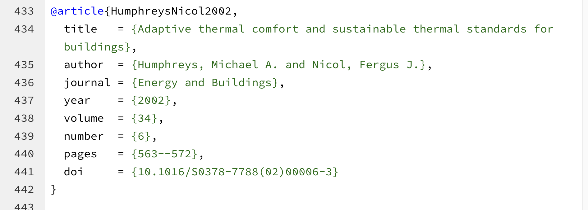
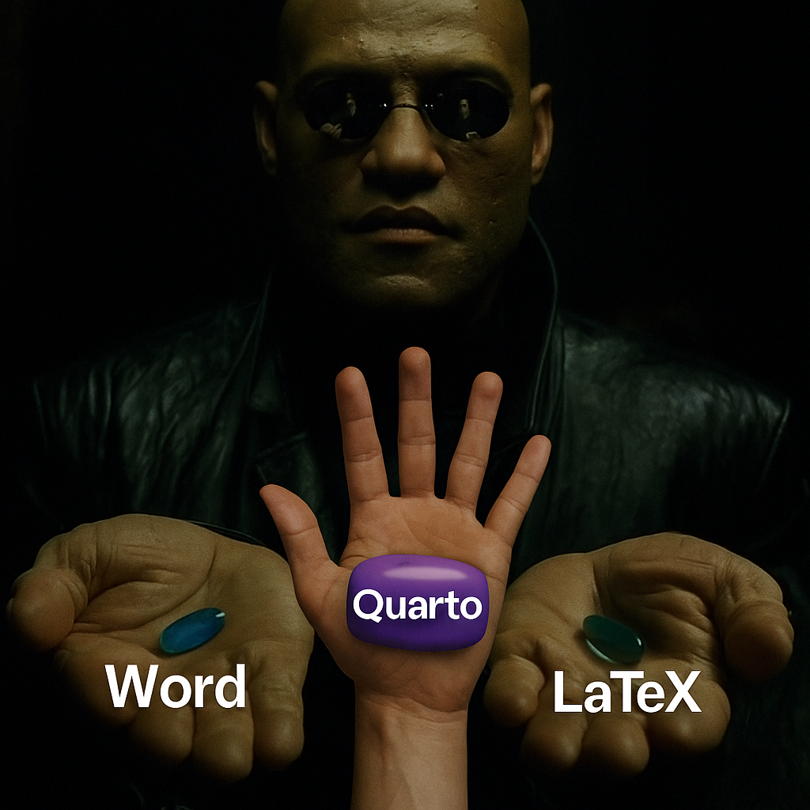

Ecosistema libre para hacier CIENCIA
¿Libre ≠ Gratis?
Gratis: no pagas dinero
Libre: tienes libertad
- Usar con cualquier propósito
- Estudiar cómo funciona
- Modificarlo
- Compartirlo
- Hacer modelo de negocio
Puedes pagar por algo libre, y algo gratis puede no darte libertad
¿Qué es FOSS?
FOSS = Free and Open Source Software
Free: libertad de uso, no necesariamente sin costo
Open Source: el código está disponible y auditable
Promueve:
- Ciencia reproducible
- Transparencia
- Colaboración global
FOSS vs. Software propietario
| Característica | FOSS | Propietario |
|---|---|---|
| Acceso al código | Abierto | Cerrado |
| Costo | Puede ser gratis o con soporte | Generalmente con licencia |
| Libertad de uso | Sin restricciones | Limitado por licencia |
| Personalización | Total (puedes modificarlo) | Muy limitada o nula |
| Comunidad | Abierta y colaborativa | Controlada por una empresa |
¿Por qué usar FOSS en ciencia?
- 💸 Económico: sin licencias costosas, accesible para todos
- 🌍 Comunidad global: soporte activo, mejora continua
- 🔄 Reproducible: auditable, trazable, replicable
- 🧠 Transparente: entiendes cómo y por qué funciona
- 🤝 Filosofía de compartir: ciencia como bien común
- 🧭 Autonomía: sin depender de corporaciones ni cajas negras
FOSS no es solo software, es una postura ética ante el conocimiento.
Claro, aquí tienes una diapositiva breve y directa que aborda esa paradoja de la curva de aprendizaje:
¿FOSS es difícil?
Sí: curva de aprendizaje más dura
Pero…
- Aprendes cómo funciona realmente
- Evitas dependencias opacas
- Automatizas tareas repetitivas
- Escalas sin licencias ni límites
- Te haces más autónomo y eficiente
Invertir tiempo al principio, te ahorra tiempo después.
Usos de FOSS en ciencia
- Escritura científica
- Análisis y visualización de datos
- Streaming y generación de contenido multimedia
- Simulación y modelado científico
- Sistema operativo
- Control de versiones y colaboración
- Gestión de datos y metadatos
- Automatización de tareas
El software libre acompaña todo el ciclo de la investigación.
Escritura científica: Word vs. LaTeX vs. Quarto
| Herramienta | Licencia | Control del formato | Reproducibilidad | Curva de aprendizaje |
|---|---|---|---|---|
| Word | Propietaria | Visual, limitada | Baja | Baja |
| LaTeX | Libre (FOSS) | Precisa y técnica | Alta | Media-Alta |
| Quarto | Libre (FOSS) | Flexible (Markdown) | Muy alta | Media |
Quarto combina la sencillez del Markdown con el poder de LaTeX y R/Python.
WYSIWYG: What You See Is What You Get
- Edición visual directa (Word, PowerPoint)
- Lo que ves en pantalla ≈ lo que se imprime
- Pero… no siempre lo que quieres es lo que obtienes
Mover una imagen en Word puede ser una aventura…
Calidad y control tipográfico
- Tipografía profesional y elegante
- Control preciso sobre formato y estilo
- Separación entre contenido y presentación
- Manejo impecable de fórmulas y símbolos científicos
- Numeración automática y consistente (figuras, tablas, ecuaciones)
- No te preocupas por el template
Ideal para artículos científicos, tesis y libros técnicos
Reproducibilidad y ciencia abierta
- Archivos en texto plano → fáciles de versionar
- Funciona con Git y control de cambios
- Integra código (R, Python) para informes reproducibles
- Sin dependencias de software propietario o versiones
- Automatizable con Makefiles o scripts
- Funciona igual en cualquier sistema operativo
LaTeX te da trazabilidad y transparencia científica
Manejo de citas y bibliografía
- Integración con BibTeX y CSL
- Citas automáticas y formateadas según el estilo requerido
- Generación automática de bibliografía
- Soporte para listas de acrónimos, glosarios, índices
- Cambiar de APA a IEEE con 1 línea de código
Nunca vuelvas a formatear referencias a mano
Bibtex
Bibtex
Estabilidad garantizada
- No se rompe por mover una figura o tabla
- Misma salida sin importar el sistema operativo
- Compatible con múltiples editores (VS Code, Overleaf, TeXstudio)
- No requiere reinventar el formato en cada nuevo documento
- Instalable o uso en la nube
Lo que compilas, es lo que obtienes. Siempre.
Colaboración y portabilidad
- Compatible con Git y plataformas como GitHub, GitLab
- Edición colaborativa en la nube con Overleaf
- Exportación a PDF, HTML, Word, ePub (vía Pandoc)
- Código fuente legible y portable
Trabaja en equipo sin preocuparte por versiones de Word
¿Quién ha usado LaTeX?
- ¿Para escribir una tesis o artículo?
- ¿Para hacer una presentación?
- ¿Para insertar una ecuación en Word y luego rendirse?
🙋♀️🙋♂️ Levanta la mano si:
- Lo amas
- Lo odias
- Sobreviviste a una tesis con él
Hoy no venimos a juzgar… venimos a evolucionar 😎
Aprendizaje valioso
- Fomenta pensamiento estructurado
- Mejora tus habilidades técnicas y de documentación
- Es un estándar en ciencia e ingeniería
- Te da independencia de herramientas cerradas
- Aprender LaTeX es como aprender a escribir bien… con código
Una inversión que rinde en toda tu carrera académica

🪦 LaTeX está muerto…
…¡larga vida a Quarto!
- Adiós
\begin{figure}
- Adiós errores crípticos tipo “Missing \endgroup”
- Adiós peleas con paquetes incompatibles
Ahora: - Escribes en Markdown
- Integras y ejecutas código R/Python
- Exportas a PDF, Word, HTML, presentación, libro…
Una sola fuente → todos los formatos
Quarto es como LaTeX… pero sin sufrimiento. 😌
Conozcamos Quarto
Una tesis de LIER
Una tesis de Maestría
Una tesis de Doctorado
Material suplementario de un paper
Hablemos de Quarto
Simplicidad y aprendizaje
- Usa Markdown, más simple y legible que LaTeX
- Menos sintaxis técnica (
**negritas**vs\textbf{})
- Ideal para quienes vienen de Word o Jupyter
- Menor curva de aprendizaje
- Evita comandos crípticos y estructuras repetitivas
Quarto es accesible desde el primer día
Mantenimiento y productividad
- Menos archivos auxiliares
- Evita errores por sintaxis estricta
- Configuración clara con YAML
- Sin peleas con paquetes
Produce más, pelea menos
Código y reproducibilidad
- Integra código R, Python, Julia, Observable JS
- Ejecuta y muestra resultados automáticamente
- Unifica texto, visualización y análisis en un solo archivo
- Oculta o muestra código según el público
- Documentos 100% reproducibles
Ciencia sin copiar/pegar resultados
Salidas múltiples
- De un
.qmdpuedes generar:- PDF (con LaTeX)
- Word
- HTML
- Presentaciones
- Libros y sitios
- PDF (con LaTeX)
- No hay que reescribir nada para cambiar de formato
Escribe una vez, publica en todas partes
Multimedia y diseño moderno
- Imágenes escalables automáticamente
- Soporte para videos, GIFs, y visuales interactivos
- Integra gráficos en vivo: Plotly, Leaflet, Vega
- Presentaciones Revealjs responsivas y limpias
Visualiza como un profesional sin tocar CSS
Automatización y reproducibilidad
- Se integra con Git, Make, Snakemake
- Entornos controlados:
conda,uv, Docker
- Parámetros dinámicos: genera versiones múltiples de un documento
- Reproducibilidad real, no promesas
La ciencia buena también se puede repetir
Colaboración y docencia
- Archivos
.qmdfáciles de leer y compartir
- Ideal para tareas, notebooks, reportes y tutoriales
- Compatible con GitHub y plataformas educativas
- Perfecto para enseñanza reproducible y abierta
- Narrativa computacional
Comparte ciencia, no solo PDFs
Referencias y bibliografía
- Citas automáticas con BibTeX, CSL, Zotero
- Estilos intercambiables (APA, IEEE, Nature, etc.)
- Generación automática de bibliografía
- Notas al pie, DOI, enlaces: todo controlado
Bibliografía bien hecha, sin dolor
Otros beneficios prácticos
- Documentación moderna y clara (quarto.org)
- Comunidad activa y libre
- Compatible con Jupyter, VS Code y RStudio
- Todo es FOSS
- No necesitas saber LaTeX (aunque puedes usarlo si quieres)
Quarto te acompaña en todo el ciclo científico
En resumen…
- LaTeX fue genial.
- Pero Quarto es:
- Más fácil
- Más moderno
- Más reproducible
- Más versátil
- Más fácil
Escribe código, escribe texto, genera ciencia.
Bienvenido a la era del .qmd
La decisión es tuya
You take the blue pill, the story ends. You wake up in your bed and believe whatever you want to believe. You take the purple pill, you stay in Wonderland, and I show you how deep the rabbit hole goes.”
Tomas la pastilla Word:
Sigues formateando a mano cada figura,
luchas con estilos y guardas 12 versiones del mismo archivo.
<!– Tomas la pastilla LaTeX:
Aprendes comandos crípticos,
pasas horas con!htbpy errores tipo “\endgroup missing”. –>
Tomas la pastilla Quarto:
Escribes en Markdown,
integras código y datos,
y descubres lo que es una vida científica reproducible.
🧙 Te muestro qué tan profundo llega el
.qmd…
Curso de Inducción, 4 de agosto, 2025.